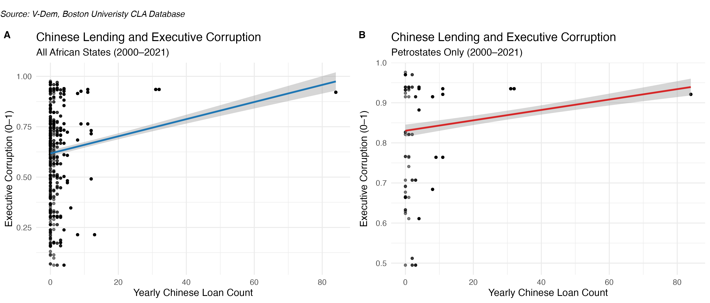

PSCI3200 Final Project
All of the data and scripts for this assignment can be found at https://github.com/Glucier39/PSCI3200_Final
Introduction
Over the past two decades, China has rapidly emerged as a dominant financial actor in Africa, reshaping the development landscape of the continent’s most resource-rich states through infrastructure loans. Since 2000, “39 Chinese lenders provided 1,243 loans amounting to $170.08 billion to 49 African governments and seven regional institutions” (Boston University Global Development Policy Center, 2023). To meet China’s growing energy demand, a significant share of this financing has flowed to petrostates - countries whose economies are heavily dependent on the extraction and export of oil and natural gas (Sow, 2018).While there has been debate about the purpose of these loans, analysis have shown that they are critical for reducing trade costs with that country and increasing participation in global value chains (Amendolagine et al., 2024). Well established, is the fact that these loans are targeted towards resource cursed nations.
Africa’s resource-rich nations frequently encounter a paradox: despite their natural resource endowments, they fail to achieve sustained economic progress. Known as the resource curse or the “paradox of plenty”, these “countries with large endowments of natural resources, such as oil and gas, often perform worse in terms of economic development and governance than do countries with fewer resources” (Soros, 2007). Fundamentally, scholars note how the economic potential of resource wealth distorts governance incentives, enabling ruling elites to consolidate power, evade public accountability, and suppress institutional checks (National Resource Governance Institute, 2015). When government spending depends more on citizen taxation, those governments are more likely to democratize or circulate democratic values. Conversely, when governments rely heavily on resource rents to fund the national budget, public oversight tends to diminish and allows elites greater freedom to divert funds for personal gain (National Resource Governance Institute, 2015). Consequently, less money is reinvested into infrastructure and the country is forced to take out loans.
These loans have taken the “form of “loan-for-oil” agreements in which Chinese state development banks lend billions of dollars to oil-producing countries at below-market interest rates in exchange for the producers’ agreements to sell oil to Chinese oil companies (at future market prices rather than at a fixed price)” (Gholz, 2017). Moreover, while these loans do not always directly fund resource extraction, they are collateralized by future resource revenues (Usman, 2001). This financing model raises important questions about its implications for governance: oil-rich nations not only reflect the structural conditions associated with the resource curse (weak governance, rent seeking), but increasingly depend on opaque, collateralized lending arrangements that lack the transparency and accountability mechanisms commonly required by traditional lenders like the World Bank. Through these large, unconditional financial inflows, already corrupt governments can effectively bypass legislative oversight and public scrutiny.
Foundational work in resource curse literature, including studies by Ross (2001) and Auty (1993), demonstrates how resource-rich governments bypass the need for taxation and public accountability by leveraging resource revenues to entrench political power. At the local level, Isaksson and Kotsadam (2016) find that Chinese development projects are associated with increased local corruption in African countries. However, despite growing attention to China’s role as a lender, there remains a significant gap in the literature concerning the broader, country-level effects of Chinese loans on executive corruption across resource-rich states. Given the literature linking loans to corruption and the recent increase in Chinese loans to Africa, I wanted to see if there was a relationship between the two. Moreover, I think that understanding these loans reinforce corruption has important implications for development policy and environmental sustainability as a whole. This study aims to measure the impact of the Chinese loans country’s measure of executive corruption.
Theory and Hypotheses
Hypothesis: In oil-rich African countries, higher inflows of Chinese development loans in a given year cause increases in executive corruption
This hypothesis aims to find a causal relationship between the amount of Chinese loans a country receives within a given year and that same country’s executive corruption score (as constructed by the Varieties of Democracy Institute).
This hypothesis is grounded in two well-established strands of political economy literature: the resource curse and the governance implications of unconditional foreign lending. As previously stated, resource curse theory posits that resource wealth weakens institutions by allowing elites to rely on rents instead of taxation. Moreover, the need for these loans to repair crumbling infrastructure (because the elites have redirected money to themselves and their party) supports the claim that reliance on rents tends to erode democratic governance and foster corruption. Chinese development loans should hypothetically amplify these dynamics. Unlike traditional lenders such as the IMF or World Bank, Chinese financing is typically opaque, collateralized by future oil revenues, and largely free of governance or transparency conditions. As opposed to taking a traditional lender’s loan, which would require strict oversight and institutional reform, corrupt governments would much rather choose an unconditional loan, even if it favors China in the long term.
Given these theoretical mechanisms, it is reasonable to expect that an increase in Chinese development financing in oil-rich African states will correlate with rising levels of executive corruption. These funds not only reinforce the resource curse by freeing elites from domestic accountability, but also enable corruption by operating outside the bounds of public financial management systems. Compared to other types of corruption within the V-Dem index (public sector, legislative corruption, judicial corruption), executive is the most theoretically relevant and empirically appropriate proxy for this study. Chinese development loans are typically negotiated and managed at the highest levels of government, often through executive channels such as ministries of finance, state-owned enterprises, or heads of state themselves. Rather than testing the impact of Chinese loans on judiciary, legislative, or public sector corruption (or the aggregate political corruption index combining all), executive corruption should see the most pronounced impact and relationship.
Still, it is important to recognize that any observed change in executive corruption linked to Chinese loans is likely to be modest. In resource-rich African countries, corruption and governance outcomes are shaped by a complex constellation of historical, political, and institutional factors - ranging from legacies of colonialism to the structure and ideology of ruling parties. Chinese development finance represents just one piece of a much larger puzzle. As countries deepen their reliance on natural resource revenues, many are already on a trajectory consistent with the resource curse in which corruption tends to rise incrementally over time. Therefore, it would be overly simplistic to frame Chinese loans as the primary driver of corruption. Instead, they should be understood as a contributing factor that may reinforce existing governance vulnerabilities within broader patterns of institutional decline.
While China has distributed development loans across a wide range of African countries, a stronger effect on corruption is expected in petrostates. According to Ross (2001), petroleum wealth is particularly harmful to institutional quality (undermining governance, rule of law, increasing corruption) due to the centralized, high-value, and capital-intensive nature of oil extraction. Unlike minerals such as diamonds or gold, which are often extracted through more decentralized and labor-intensive processes, oil requires massive upfront investments in infrastructure like pipelines, refineries, and export terminals. This makes oil-exporting states more dependent on large-scale financing and more likely to engage in opaque “loan-for-oil” deals with external lenders such as China. Simultaneously, Chinese infrastructure loans serve a much more strategic benefit in petrostates.
Data and Research Design
This study utilizes a fixed effects regression across all petrostates from 2000–2021, controlling for time-invariant, unobserved country characteristics like geography, colonial history, and legal systems that could bias the relationship between Chinese loans and V-Dem’s executive corruption index. The model also controls for GDP per capita (in constant 2015 USD), the percentage of exports in GDP (as a %), and trade volume with China (in USD).
The quantity of Chinese Loans to Africa is the main independent variable. The Chinese Loans to Africa (CLA) Database, maintained by Boston University’s Global Development Policy Center, tracks loan commitments (measured in number of commitments per year) from Chinese state-owned banks, government entities, and companies to African governments, SOEs, and regional institutions. Originally developed by the China Africa Research Initiative at Johns Hopkins University, the database documents 1,306 commitments totaling $182.28 billion across 49 countries and 7 regional bodies from 2000 to 2023. Data is compiled from official documents, contractor websites, fieldwork, interviews, and media reports. While it reflects commitments rather than disbursements and may not capture all loans due to opacity, it remains widely used to assess the scale and strategic focus of Chinese development finance. To construct the annual loan variable, I grouped the data by country-year and calculated the number of loan commitments.
Executive corruption is the dependent variable. v2x_execorr from V-Dem measures how often executive officials engage in corruption—bribery, kickbacks, embezzlement, or misuse of public resources. The index is a composite of executive bribery (v2exbribe) and executive embezzlement (v2exembez), scaled from 0 to 1, where higher values indicate more frequent and severe corruption.
GDP per capita (logged; original values in constant 2015 USD) and exports as a share of GDP (logged; original values in %) are included as controls. These come from the World Bank Open Data portal. GDP per capita accounts for economic development, as wealthier states may have different corruption dynamics. The export-to-GDP ratio controls for trade dependence, which can affect rent-seeking by elites. In high-export economies, elites may access unearned foreign revenue with limited accountability.
Bilateral trade data with China, measured in USD (total annual trade value per country-year), comes from the UN Comtrade database via Open Trade Statistics (OTS). It captures total annual imports and exports for African countries from 2000 to 2021. This controls for broader China-Africa economic engagement, ensuring loan effects aren’t conflated with general trade trends.
A key limitation of the initial model is reverse causality—higher corruption may lead to more Chinese loans. To address this, I conduct two regressions using two-year lags for both executive corruption and loan count. Two years provides enough time for corruption or loan allocation to affect governance while remaining close enough for causal relevance. One-year lags may reflect administrative noise, while longer lags risk including unrelated political changes. By testing whether loans predict future corruption and vice versa, this approach probes endogeneity and strengthens the causal credibility of the original hypothesis.
This model assumes a causal relationship between Chinese lending and executive corruption, conditional on the included controls. However, limitations remain. The analysis cannot fully eliminate the risk of omitted variable bias or measurement error, especially given the opacity of Chinese loan data and potential underreporting of corruption. Moreover, even having controlled for the largest confounders (and further proxies that could be associated), we still have to assume that no unobserved time-varying factors simultaneously influence both loan allocation and corruption levels. While the fixed effects model helps address time-invariant confounding, and economic and trade controls mitigate many observable risks, causal interpretation ultimately relies on the assumption that any remaining bias is negligible or random.
Interactive Summary Statistics Table (Raw Statistics)
Results
Fixed Effect Regressions: Impact of Chinese Loans on Africa Vs Petrostates
The regression table supports the hypothesis that increased Chinese lending is associated with greater corruption, with statistically significant coefficients in both models. Substantively, for every one additional Chinese loan a country receives in a given year, its executive corruption index score increases by 0.0024 in the full African sample and 0.0038 among petrostates. While the absolute difference between these effects (0.0014) may appear small, it becomes more meaningful when viewed in the context of the V-Dem corruption index’s scale. Across all observations, the executive corruption index ranges from 0.485 to 0.985—a span of just 0.5. This means a change of 0.0038 represents roughly 0.76% of the total observed range. In countries receiving high loan volumes, the cumulative effect could reach a noticeable fraction of the corruption index. As stated previously, this small effect size was entirely to be expected. The stronger relationship observed in petrostates supports theories that resource-rich regimes may be especially susceptible to external financing mechanisms that enable elite capture or reduce domestic accountability. In the African sample, GDP per capita is positively and significantly associated with executive corruption, suggesting that as countries grow wealthier, political elites may gain greater access to rents without proportional increases in oversight. In contrast, trade with China shows no significant relationship. However, among petrostates, the pattern differs: GDP per capita is not significant, while trade with China becomes a strong and negative predictor of corruption. Here, GDP per capita may have little impact on executive corruption because oil revenues often concentrate wealth among elites without strengthening public accountability. As a result, economic growth does not necessarily curb rent-seeking, reflecting a classic resource curse dynamic.
Scatterplots: Executive Corruption vs Chinese Lending (2000–2021)

The scatterplots display that most country-year observations cluster around low Chinese loan counts (especially between 0–10), with very few receiving over 40 loans in a single year. Between both graphs, however, the relationships are skewed heavily by outliers. In this case, Angola received 80+ loans in 2016, disproportionately influencing the regression line and inflating the apparent relationship between loan volume and corruption. Moreover, the effect size should be interpreted with caution, as it may not reflect the experience of the typical African country.
While the models show a relationship between Chinese Loans and corruption, the relationship cannot be defined yet as causal: reverse causality remains a concern. It is still possible that, rather than Chinese loans driving executive corruption, corrupt countries are more likely to receive loans because they are excluded from other funding sources or because Chinese lenders face fewer political conditionalities. To address this, I performed lagged regressions in my empirical extension to establish directional causality.
Emperical Extension
A lagged regression serves as a valuable empirical extension because it introduces temporal ordering to help address concerns about reverse causality. Here, the core question is whether increased Chinese lending causes higher levels of executive corruption, or whether more corrupt regimes receive more Chinese loans. To investigate this, I created two staggered variables to represent executive corruption and loan count two years ahead. I then ran two regressions: one testing whether current loan volumes predict corruption levels two years later, and another testing whether current corruption predicts loan volumes two years later.
Chinese Loans -> Executive Corruption in 2 Years
\[\begin{equation} \text{ExecCorr}_{it} = \beta_1 \cdot \text{Loans}_{it} + \beta_2 \cdot \text{GDP}_{it} + \beta_3 \cdot \text{Exports}_{it} + \beta_4 \cdot \text{Trade}_{it} + \alpha_i + \gamma_t + \epsilon_{it} \end{equation}\]
Executive Corruption -> Chinese Loans in 2 Years
\[\begin{equation} \text{Loans}_{it} = \beta_1 \cdot \text{ExecCorr}_{it} + \beta_2 \cdot \text{GDP}_{it} + \beta_3 \cdot \text{Exports}_{it} + \beta_4 \cdot \text{Trade}_{it} + \alpha_i + \gamma_t + \epsilon_{it} \end{equation}\]
Notation
- \(i\): Country
- \(t\): Year
- \(\alpha_i\): Country fixed effects (e.g., geography, institutions)
- \(\gamma_t\): Year fixed effects (e.g., global or regional shocks)
- \(\epsilon_{it}\): Error term
If previous loan levels significantly predict future corruption, this suggests that loans may be shaping governance outcomes over time. Conversely, we can also test the reverse by lagging the dependent variable—executive corruption—to see whether past corruption levels predict future loan volumes. If this relationship is weak or insignificant while the first is strong, it strengthens the case for a causal effect running from loans to corruption. This strategy helps rule out simultaneity, where both variables move together for unrelated reasons, and provides a clearer test of directionality, enhancing the credibility of the original hypothesis.